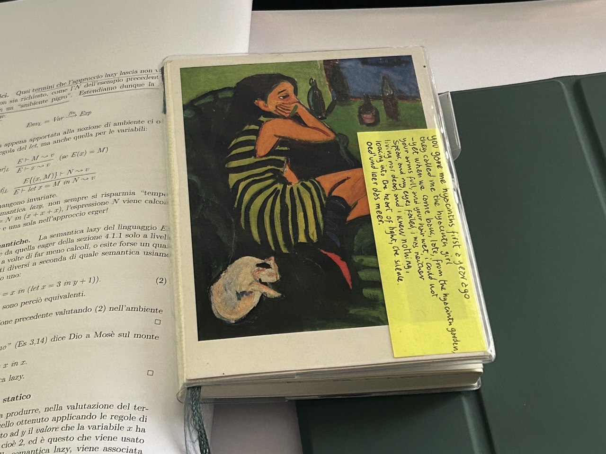

from the wikipedia article for 'commonplace book':
commonplace books (or commonplaces) are personal notebooks used to compile any information the owner finds interesting or useful. they can variously contain notes, proverbs, adages, aphorisms, maxims, recipes, quotes, letters, poems, tables of weights and measures, prayers, legal formulas, and other professional references.
(since i usually put those things on my walls, this will be my commonplace wall)
and to my commonplace notebook, too:
)